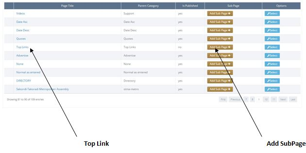
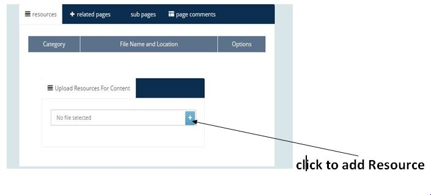

Adding Top LInks
Adding Top LInks
1. Top Links are the main Links of the website.

2. To add a Top Link, click on the "Content" link.

3. Search for 'Top Link' in the table below and click on its corresponding "Add sub Page" Button.

4. Fill the forms given you.
-Title = the title of the Top Link page you are creating.
-Source = Is the source of Information you are adding to the Top Link Page.
-Content = the writings that will be seen on the Top Link page.
-Show Page = if yes, means the Top Link page you are creating will be shown on the website after saving
else the Top Link page will be created after saving but will not show on the website.
-Parent Category = tells you the page under which you are creating the new page.
-Resource = Used to add image to the Top Link page. An image of 500pixels X 350 pixels gives the best result .

3. Click on the "save new content"  button below, when done.
button below, when done.
4.The 'rest form' button  when clicked will clear all details populated in the form.
when clicked will clear all details populated in the form.
Created with the Personal Edition of HelpNDoc: Generate EPub eBooks with ease